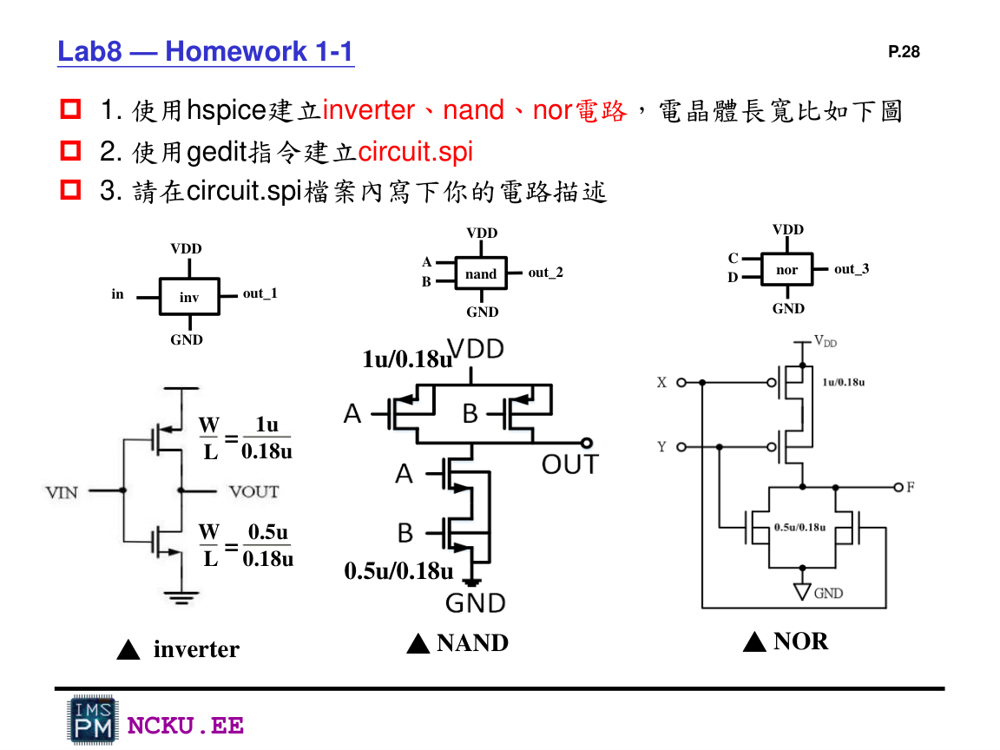

Inverter / NAND / NOR 電路設計
三個電路都使用 PMOS W/L=1u/0.18u、NMOS W/L=0.5u/0.18u。

Lab8 講義中的三個作業電路：inverter、NAND、NOR。
三種邏輯閘比較
| 電路 | PMOS 網路 | NMOS 網路 | 輸出為 0 的條件 |
|---|---|---|---|
| Inverter | 單顆 PMOS | 單顆 NMOS | in=1 |
| NAND | 並聯 | 串聯 | A=1 且 B=1 |
| NOR | 串聯 | 並聯 | C=1 或 D=1 |
真值表
NAND
| A | B | out_2 |
|---|---|---|
| 0 | 0 | 1 |
| 0 | 1 | 1 |
| 1 | 0 | 1 |
| 1 | 1 | 0 |
NOR
| C | D | out_3 |
|---|---|---|
| 0 | 0 | 1 |
| 0 | 1 | 0 |
| 1 | 0 | 0 |
| 1 | 1 | 0 |
小測驗
問題：NAND 的輸出什麼時候會變成 0？